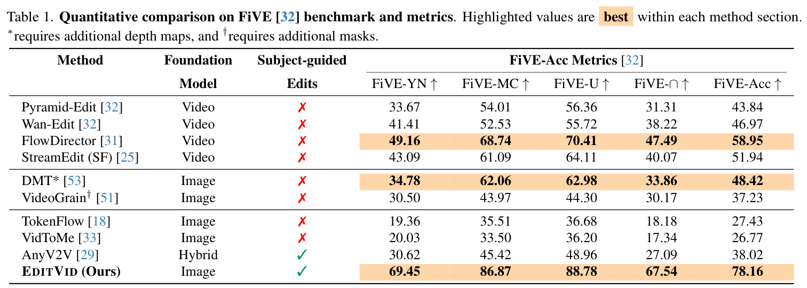
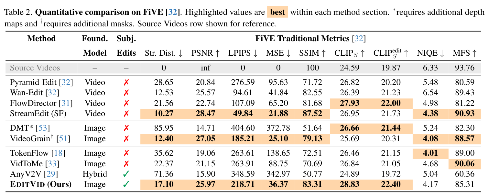
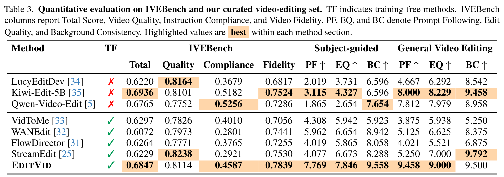

SourceEᴅɪᴛVɪᴅ
Attribute edit
“Change the elephant's color to blue.”
Video editing spans diverse editing paradigms, yet achieving high-quality instruction-guided and subject-guided editing within a single unified framework remains challenging. We introduce EditVid, a training-free framework combining sparse causal memory for local coherence, correspondence-based post-attention token injection for long-range identity preservation, and soft latent blending for edit locality. The same framework supports instruction-guided and reference-guided edits, including style transfer, attribute modification, object insertion, part-level editing, and subject replacement. On FiVE, EditVid achieves 78.16 FiVE-Acc, compared with 58.95 for the strongest evaluated training-free baseline, while obtaining competitive results on IVEBench. A user study further shows a 51.8% overall preference for EditVid over 7 competing methods.
EᴅɪᴛVɪᴅ operates only on visual latent tokens inside frozen MM-DiT-based image editors. Text and optional reference-image conditioning remain unchanged, preserving each editor's original semantic control.

Each frame attends to visual key–value states from the immediately preceding frame. This bounded context gives strong short-range coherence while avoiding unreliable long-range RoPE interactions.
Confidence- and cycle-consistent correspondences match each frame to an anchor. Matched visual representations are injected after attention for long-range appearance and identity preservation.
Timestep-dependent preservation weights are derived from source–edit trajectory discrepancies, retaining source content where needed while allowing the requested edit elsewhere.
EᴅɪᴛVɪᴅ is evaluated on fine-grained editing accuracy, traditional preservation metrics, IVEBench, and curated subject-guided and general video-editing sets.



Select an edit to compare synchronized outputs from the source, representative baselines, and EᴅɪᴛVɪᴅ. Click any video to pause or resume the complete row.

@article{juvekar2026editvid,
title={One Editor, Many Edits: A Unified Training-Free Framework for Diverse Video Editing},
author={Adheesh Sunil Juvekar and Onkar Kishor Susladkar and Kiet A. Nguyen and Muntasir Wahed and Nabeel Bashir and Xiaona Zhou and Tianjiao Yu and Vedant Shah and Ismini Lourentzou},
journal={arXiv preprint arXiv:2609.04190},
year={2026}
}